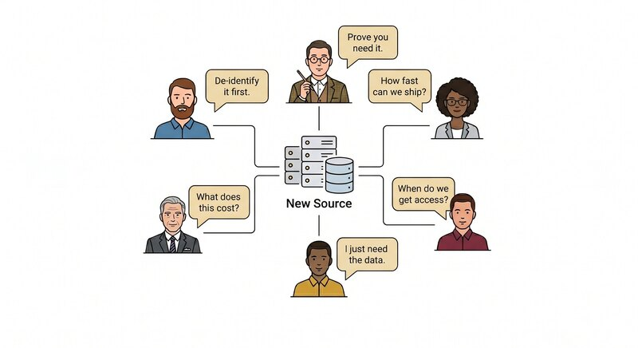

Privacy says: de-identify it first. Compliance says: prove you need it. Engineering says: how fast can we ship? Finance says: what does this cost? Analytics says: when do we get access? The data scientist says: I just need the data.
Paper 1 named why these voices conflict at the architecture layer. This paper shows the pattern that resolves it: an architecture decision made before the first byte of source data lands.
Paper 1 named four mechanisms and two problems. This is the architecture that separates them.
One hundred percent of the source payload lands once, at a fork point. This model assumes that data ingestion to the analytical store is approved based on documented use cases. The framework governs what happens to it after. From the fork, two independent streams receive the data. Stream 1 is the compliance vault: write-once, append-only, governed by Mechanisms 1 and 2 (legal retention and purge after the legal floor). Stream 2 is the analytical store: a medallion lakehouse, with Bronze (raw analytical store), Silver (cleaned, query-ready tables), and Gold (curated products used by analytics and applications) layers, governed by Mechanisms 3 and 4 (purge when no use, hard mask). After ingestion, the two streams are governed independently. Lifecycle actions in one stream do not automatically propagate into the other.
The point of the fork is not redundancy. The point is that the two problems have different jobs. The vault carries the legal weight. The analytical store carries the analytical weight. When something has to give (a subject erasure request, a regulatory hold, a cost cut) it gives in only one stream.
This architecture reduces policy ambiguity at the cost of additional lineage, governance, and orchestration complexity. That tradeoff is worth naming before Day Zero.
When the regulated retention period expires, the vault record reaches the retention ceiling: a binary decision. Retain the underlying business event with identifying fields removed, on a documented analytical basis. Or dispose of the record in full. The standard for what counts as identity removal is defined and documented by privacy and legal, aligned to applicable regulatory obligations. It is not derived from any single regulation's safe-harbor language. It is the organization's own documented standard, attested and auditable.
The dual-stream architecture is the shape. These five capabilities are what makes it operate. All five are easier to build at platform launch than to retrofit later. Retrofit work runs in parallel with live data flows and adds coordination cost the original build avoids. Building capability before policy is written means the platform is ready to act when policy arrives.
| Capability | What it means |
|---|---|
| Analytical store derives from source, not vault | The analytical store lands from the fork point independently. Vault disposal never propagates downstream. |
| Day Zero ingestion standard | New sources onboard through the same process. No bespoke pipeline design per source. |
| Telemetry-driven lifecycle | Usage signals drive promotion and disposal. The platform acts on evidence of use, not on the legal retention calendar of the vault. |
| Service-account-per-use-case | Each analytical use case authenticates through its own service account. Idle service accounts signal dormant use cases, which become candidates for removal. |
| Identity protection from Day Zero | Soft mask from Silver up. Hard mask for maximum risk protection per use case. |
The architecture works only when two organizational commitments hold. All data flows through the platform: one ingestion point, no exceptions, no side channels. Vault and analytical store are designed together from Day Zero. Not the vault first and analytics retrofitted, not the reverse.
Organizations that take the architecture but skip the commitments end up with a source system that the analytical store has to create a separate flow to receive, or worse, the analytical store becomes a second vault that needs to meet vault requirements because it accumulated data the real vault did not.
The vault problem is largely solved by the architecture itself: write once, retain for the regulated period, dispose at the floor. The analytical store needs more. Six ideas govern how data lives, moves, and leaves the analytical store.
Paper 3 takes the architecture to its hardest test: a data subject erasure request. It shows why the same hard-mask process serves both routine lifecycle removal and an erasure request, when three platform conditions hold.
| Model | Claude Sonnet 4.6 — 2026-05-12 |
| Version | v6.0 — Final editorial pass; series complete |
| Session | 2026-05-12 — DL-S12 |
| Audience | Cross-functional leadership (legal, compliance, data engineering, analytics) — LinkedIn series |
| Sources | The Author's original Analytical Data Lifecycle whitepaper (April 2026); external review: Gemini, ChatGPT, Perplexity; editorial decisions approved by author across sessions DL-S01 through DL-S12. |
| Decision / Action | First official published version. Publish one paper per week beginning with Paper 1. |
| Iteration Notes | v6.0: Final banned-pattern pass (DL-S12). Removed unsupported frequency claim (P1); removed "data minimization" label (P2); replaced metaphorical "data landscape" (P2); sharpened closing question (P2); removed contraction (P3). Version number unified across series at v6.0. |
| Assumptions | Images served via Google Drive thumbnail URLs. Publishing via GitHub Pages. |
| Scope Exclusions | Does not cover implementation playbook, vendor selection, or regulatory legal advice. |
| Tool Chain | Claude only — drafting, editing, HTML production across DL-S01 through DL-S12. |
| Review Status | Accepted — ready to publish. |